第一章零度
二〇八九年的台北，冬天已經不會下雨了。
氣候調節塔在二〇六〇年代蓋好以後，這座城市的天氣就變成一種可以預約的東西。市政府每年固定安排十二天的雨，分配在春天，方便農業區用水。其他的日子都是晴的，乾的，均勻的二十四度。老人們說以前的冬天會冷到手指伸不直，年輕人不信。
陸青四十一歲，算是相信的那一邊。他小時候經歷過最後幾個真正的冬天，記得那種從骨頭裡滲出來的冷。不過他也不確定那是不是真的記得——在他這一行做久了，對「記得」這件事會越來越沒有把握。
他的店在大稻埕，迪化街後面一條很窄的巷子裡，一棟一九二〇年代的紅磚樓房，三層樓，門口沒有招牌，只有一塊小小的黃銅牌子，上面刻著兩個字：零度。
零度是一間記憶調音室。
✦
記憶冷凍技術是二〇五〇年代的東西。原理陸青可以講三個小時，但簡單來說是這樣的：人的記憶存在神經元的連結模式裡，這種模式可以被讀取、編碼、轉存到一種叫做「霜片」的載體上——一片指甲大小的透明晶體，在零下一百九十六度的環境裡可以保存兩百年以上。轉存以後，原本的記憶會從腦子裡移除，像從硬碟裡剪下一個檔案。需要的時候，霜片可以再植回去。
一開始這是醫療用的。創傷後壓力症候群的病人可以把那一段記憶冷凍起來，等到準備好了再拿回來，或者永遠不拿。失智症患者可以在忘記之前把一生冷凍，留給家人。
然後有人發現，霜片可以被修改。
不是刪掉，是修。一段記憶裡的痛可以被調低，像調音量。一個人的臉可以被調模糊，一句話可以被調得溫柔一點，一場車禍可以被調成一次擦撞。修過的霜片植回去，人會記得那件事，但不會再痛了。
做這件事的人，叫調音師。
陸青做了二十年。他是台北最好的調音師之一，客人從政治人物到街口賣麵的都有。他的手很穩，耳朵很好——這一行講「耳朵」，因為調音師在工作的時候，霜片裡的記憶會以聲音的形式呈現，痛的地方是刺耳的高頻，快樂的地方是溫暖的中頻，遺忘的地方是一片白噪音。一個好的調音師，可以在一段記憶裡聽出每一個頻率，然後決定哪一個要調低，哪一個要留著。
他的店裡有三台調音台，一個零下一百九十六度的保險庫，一個學徒，和一架鋼琴。
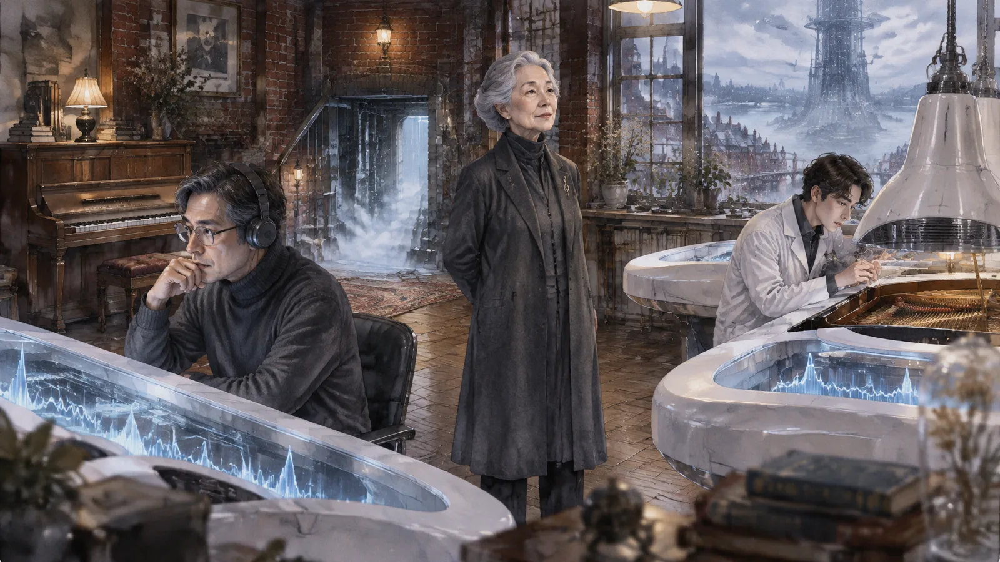
鋼琴是二手的，山葉的直立式，二〇三〇年代的東西，放在二樓的角落。陸青偶爾會彈。他彈得不錯，可是有一段他從來沒有彈完過——蕭邦的第二號夜曲，彈到中段的一個轉折，他的手指就會停下來，像碰到一堵看不見的牆。他不知道為什麼。他只知道每次彈到那裡，胸口會有一種很淡很淡的、像是有東西被拿走了的感覺。
他從來沒有去查。
在這一行，不去查是一種專業。
第二章溫如晦
溫如晦來的那天，是一月的第一個星期一。
她八十四歲，走路不用拐杖，背挺得很直，穿一件深灰色的長大衣，大衣的領子上別著一枚很小的銀色胸針，是一個高音譜號。她在門口站了一會兒，看著那塊黃銅牌子，然後推門進來。
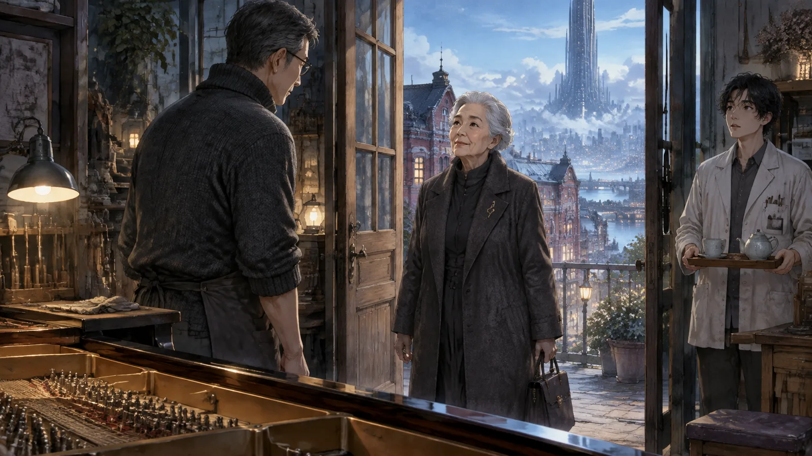
「陸先生？」
「是。」
「我是溫如晦。」她說，「我打過電話。」
陸青當然知道她是誰。溫如晦是這個世紀最好的鋼琴家之一——不是「之一」，是很多人心裡的那一個。她十九歲在華沙拿了獎，二十幾歲開始在全世界巡迴，五十歲以後回台灣教學，七十歲宣布退休，之後就很少公開露面。陸青大學的時候聽過她的現場，那時候她六十三歲，彈舒伯特，他記得整個音樂廳安靜得像沒有人在呼吸。
「請坐。」他說。
她坐下來。學徒小澈端了茶進來，看到她的時候手抖了一下，茶灑了一點在托盤上。
「我要冷凍我的記憶。」溫如晦說，「全部的。跟音樂有關的。」
陸青點點頭。這種案子他做過，通常是失智症的初期患者。
「醫生說我還有大概一年。」她說，語氣像在講天氣，「一年以後，我會開始忘記。先是名字，然後是臉，然後是曲子。我不想忘記曲子。」
「我明白。我們可以分批做，先做最重要的——」
「我有一個條件。」
陸青等著。
「不調音。」溫如晦說，「一個音都不能動。」
陸青放下手裡的筆。
這個要求他聽過，但不多。大部分客人來冷凍記憶，多多少少都會請他順手調一下——那個舞台上的失誤，那句評論家的話，那次沒有拿到的獎。人總是希望留下來的東西好看一點。
「溫女士，我必須說明一下。」他說，「不調音的霜片，植回去的時候會完整地重現原本的感受。包括痛的部分。如果將來您的家人要——」
「我沒有家人。」溫如晦說，「霜片是留給我自己的。我還沒忘記之前，我要每天聽一次。忘記以後，就讓它們凍著。」
「那為什麼不調？調過的記憶，聽起來會舒服很多。」
溫如晦看著他。她的眼睛很黑，很亮，八十四歲的人不該有這樣的眼睛。
「陸先生，你彈琴嗎？」
「一點。」
「那你應該知道。」她說，「一首曲子裡如果沒有錯音，就不是那個人彈的了。」
第三章霜片
冷凍的過程很慢。
客人躺在調音台上，頭上戴一個很像老式吹風機罩的東西，陸青在旁邊的控制面板上一段一段地讀取。每一段記憶讀出來，會先在螢幕上顯示成一段波形，同時在陸青的耳機裡變成聲音。他聽，判斷，然後決定切在哪裡——記憶是連續的，沒有天然的段落，切點的位置決定了這一片霜片會不會完整。
溫如晦的記憶，陸青從最早的開始。
一九七〇年代的台北。一個五歲的女孩，冬天，真正的冬天，冷到手指伸不直。她在一間日式的老房子裡，榻榻米，紙門，客廳裡有一架很舊的鋼琴，是她父親從一個要搬回日本的教授那裡買的。女孩坐在琴凳上，腳搆不到踏板，她的父親站在旁邊，把她的手指一根一根放在琴鍵上。
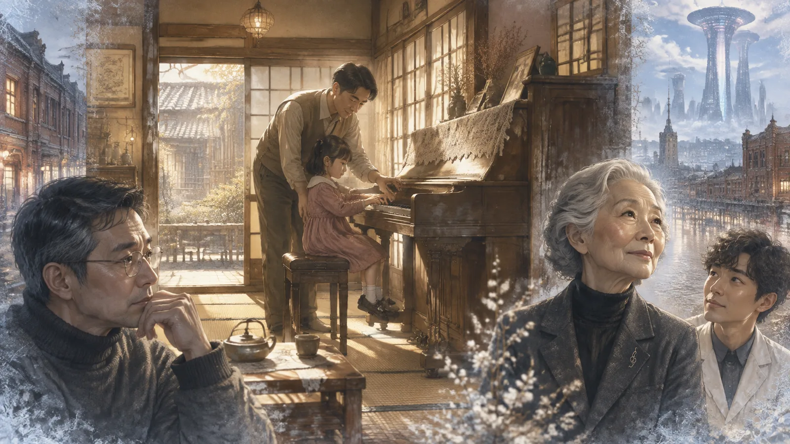
「這是Do。」父親說。
女孩按下去。聲音很悶，因為琴很舊，可是她記得那個聲音一直傳到她的手臂裡，傳到肩膀，傳到後腦。她記得她笑了。
陸青在耳機裡聽到這一段的時候，是一片很溫暖的中頻，像冬天的太陽照在木頭地板上。他把切點放在她的笑聲之後，按下冷凍。螢幕上的波形凝固成一片透明的晶體。
「第一片。」他說。
溫如晦躺在調音台上，眼睛閉著，嘴角有一點點往上。
「我記得那架琴。」她說，「有一個鍵是壞的，高音的La，按下去沒有聲音。我父親說那是琴在教我，有些音要自己想像。」
「要調嗎？把那個壞掉的鍵修好？」
「不。」
陸青繼續。
他們一個星期做三次，每次三個小時。溫如晦的記憶像一條很長的河，陸青一段一段地把它凍起來。十歲的比賽。十五歲的老師。十九歲的華沙，第一次在那麼大的音樂廳裡彈琴，燈光打下來的時候她什麼都看不見，只看得見琴鍵。二十五歲的柏林，三十歲的紐約，四十歲的東京。
有一些記憶很痛。
三十七歲的那一年，她在維也納的一場音樂會上，彈到拉赫曼尼諾夫的第二號協奏曲第三樂章，忽然忘了譜。整整四個小節，她的手停在空中，樂團繼續演奏，指揮回頭看她，觀眾席裡有人開始交頭接耳。她記得那四個小節有多長，長到像一輩子。然後她接上了，彈完了，觀眾還是鼓掌，可是她知道，她知道。
陸青在耳機裡聽到這一段的時候，是一種很尖的高頻，像指甲刮過玻璃。
「這一段，」他說，「妳確定不調？」
「確定。」
「這種頻率的記憶，植回去的時候會很不舒服。」
「陸先生，」溫如晦說，眼睛還是閉著，「那四個小節，我後來想了四十年。我想通了一件事：我忘譜不是因為我不熟，是因為我那時候太想彈好了。太想彈好的人，會忘記自己在彈什麼。這件事只有那四個小節能教我。你把它調掉，我就白痛了。」
陸青把切點放在指揮回頭的那一刻，按下冷凍。
「第三十七片。」他說。
第四章華沙
第三個星期，他們凍到了華沙。
一九八九年。溫如晦十九歲。蕭邦國際鋼琴大賽，五年一次，全世界最難的比賽之一。她是那一屆最年輕的決賽者，也是第一個進決賽的台灣人。
陸青在耳機裡聽到的第一個聲音，是雪。
不是雪的聲音——雪沒有聲音——是雪帶來的那種安靜。十九歲的溫如晦站在華沙愛樂廳的後門，外面下著她這輩子第一次看到的雪，她穿著一件借來的黑色大衣，太大了，袖子蓋過手指。她在等，等工作人員叫她的名字。她的手很冷，冷到她開始害怕上台的時候手指會伸不直。
然後她想起她父親。想起那架舊鋼琴，想起壞掉的高音La，想起父親說：有些音要自己想像。她把手伸進大衣的口袋裡，閉上眼睛，在心裡彈了一遍她等一下要彈的曲子。每一個音。包括她想像出來的那一些。
工作人員叫了她的名字。她走進去。
燈光打下來的時候她什麼都看不見。八百個座位，她看不見任何一張臉，只看得見琴鍵，黑的和白的，在燈光下像一排很整齊的牙齒。她坐下來。她的手還是冷的。
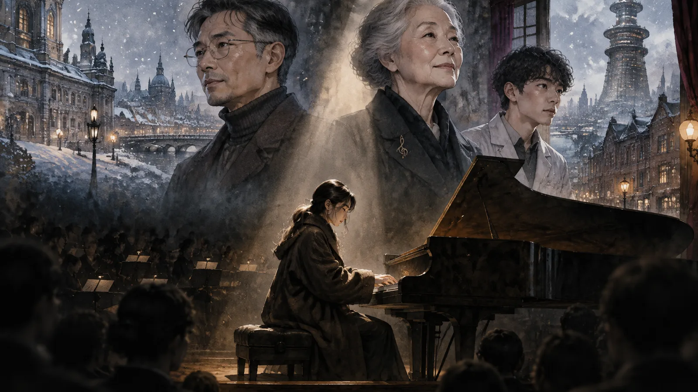
她彈的是蕭邦的第二號鋼琴協奏曲。
第一樂章她彈得像一個十九歲的人，太用力，太急，每一個音都想證明什麼。陸青在耳機裡聽到的是一種很緊的、繃著的中高頻，像一條快要斷的弦。評審席上有人皺眉頭，她看不見，可是她知道。
第二樂章的時候，出了一件事。
那是一個很慢的樂章，慢到每一個音之間都有很長的空白。彈到中段，樂團停下來，只剩下鋼琴。她的右手正要落到一個很高的音上——她忽然看見了那個壞掉的La。
不是真的看見。是她的手指記得。那架舊鋼琴上，那個按下去沒有聲音的鍵，她五歲的時候按過幾千次，每一次都是安靜的，每一次她都在心裡補上那個音。
她的手指落下去。
音出來了。很清楚，很亮，華沙愛樂廳的史坦威沒有壞掉的鍵。可是她聽到的不只是那個音。她聽到的是五歲的自己在心裡補上的那個音，和十九歲的自己真的彈出來的那個音，疊在一起。
從那一個音開始，她不再急了。
陸青在耳機裡聽到的，是弦鬆開的聲音。繃著的中高頻慢慢地降下來，變成一種很寬很寬的中頻，像雪落在整座城市上。第二樂章的後半，她彈得像一個八十歲的人，每一個音都不趕，每一個空白都讓它空著。
她拿了第二名。第一名是一個俄國人。她不在乎。
「這一片，」陸青說，「是妳最好的一片。」
溫如晦躺在調音台上，眼睛閉著。
「不是。」她說，「最好的是那個La。五歲的時候，按下去沒有聲音的那一個。沒有那一個，就沒有華沙。」
陸青把切點放在第二樂章結束的地方，按下冷凍。
「第五十二片。」
「陸先生，」溫如晦說，「你知道為什麼調音師會把痛的地方調掉嗎？」
「因為客人要。」
「因為他們聽不出來痛的後面有什麼。」溫如晦說，「痛是很大聲的，會把後面的東西蓋住。你們聽到痛，就把它調低。可是後面的東西也一起低了。那個壞掉的La，我父親如果把它修好了，我就不會學會想像。」
陸青沒有說話。他看著螢幕上凝固的波形，看著那片霜片裡的雪。
第五章缺的那一段
第五個星期的某一天，溫如晦提早到了。
陸青還在二樓。他有時候在客人來之前會彈一下琴，讓手指暖一暖——這一行的手需要很穩，而彈琴是他知道的最好的方法。他彈的是那首蕭邦，第二號夜曲，降E大調。他彈得很輕，因為樓下有人。
彈到中段的時候，他的手停了。
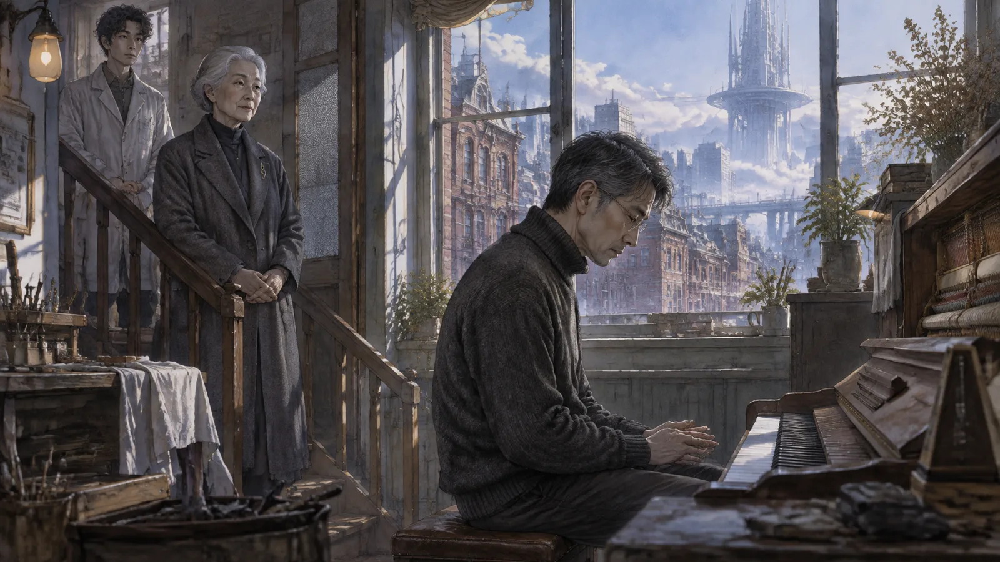
跟往常一樣。那個轉折，右手要從一個裝飾音落到主旋律上，他的手指知道該去哪裡，可是就是不肯去。他坐在那裡，手懸在琴鍵上面，胸口是那種很淡的、被拿走了什麼的感覺。
「你少了一段。」
他轉過頭。溫如晦站在樓梯口，深灰色大衣，銀色胸針。
「抱歉，我沒注意到您——」
「你少了一段。」她又說了一次，走過來，在鋼琴旁邊站定，「不是技巧的問題。你的手可以彈，可是你的耳朵裡沒有那一段。你不知道它聽起來是什麼樣子。」
陸青沒有說話。
「你是調音師。」溫如晦說，「你自己有沒有被調過？」
這個問題像一根很細的針，扎進一個他從來沒有碰過的地方。
「我不知道。」他說。
這是實話。調音師可以幫自己冷凍，也可以請同行幫忙。冷凍之後，那段記憶就不在了，人不會記得自己曾經有過那段記憶，也不會記得自己冷凍過它。除非有人告訴你，或者，除非你去保險庫裡找。
他從來沒有去找過。
「我有一個女兒。」他聽見自己說。他不知道為什麼要說這個，「小滿。她——不在了。二〇七六年。我記得她的臉，記得她的聲音，記得她喜歡吃什麼。可是我不記得她是怎麼不在的。我知道有這件事，可是那件事本身，我沒有。」
溫如晦看著他，看了很久。
「你自己調的？」
「我不知道。可能是。可能是那時候的我，覺得那樣比較好。」
「那首夜曲，」溫如晦說，「跟她有關？」
陸青低頭看著琴鍵。
「她學過。」他說，「五歲開始學，學了兩年。那首夜曲是她最喜歡的，她說中間那一段聽起來像有人在跟你說晚安。她死的那一年，我沒有辦法再彈那一段。後來我發現我根本不記得那一段聽起來是什麼樣子了。」
「所以你把它也凍了。」溫如晦說，「跟她一起。」
窗外的天空是均勻的、乾淨的藍。氣候調節塔在遠處閃著光。
「陸先生，」溫如晦說，「你知道為什麼我不調音嗎？」
「因為錯音是那個人彈的。」
「不只是。」她在琴凳的另一端坐下來，把手放在琴鍵上，沒有按，「因為一首曲子的意思，不在正確的那些音裡。在你彈錯以後，怎麼接回去的那個地方。你把錯音拿掉了，接回去的那個地方也就沒有了。那才是你想留的東西。」
她按下一個音。高音的La。
「你的女兒，」她說，「你把她死的那一段拿掉了。可是你也把你怎麼從那裡活回來的那一段拿掉了。你現在是一個沒有接回去的人。你的手停在半空中，四十年。」
陸青坐在那裡，很久很久沒有動。
「今天不做了。」溫如晦站起來，「你去想一想。」
第六章小澈
小澈是陸青的學徒，二十四歲，做了三年。
他很聰明，耳朵很好，可能比陸青二十四歲的時候還好。他也很急。他想在三十歲之前開自己的店，想接大客戶，想把「零度」的名聲變成自己的。陸青不怪他，這一行的人大多是這樣，他自己二十四歲的時候也是。
小澈是在第六個星期跟陸青提「霜盟」的。
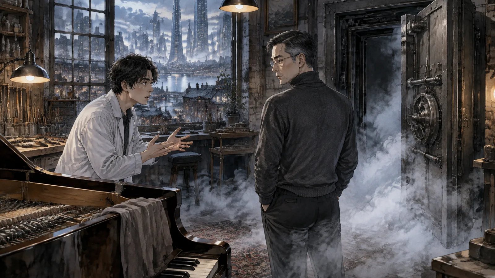
「他們想買。」小澈說。他們在一樓的工作間裡，溫如晦剛走，保險庫的門還沒關，裡面的白霧慢慢地飄出來，「溫女士的霜片。全部。」
「她的霜片不賣。」
「他們出的價格，」小澈說了一個數字，「是我們店三年的營收。」
陸青把手裡的工具放下。
「霜盟」是這一行最大的公司，總部在信義區的一棟一百二十層的大樓裡。他們做的生意很簡單：買記憶，賣記憶。一個人的登山記憶，可以賣給一個從來沒有爬過山的人。一個人的初戀，可以賣給一個從來沒有戀愛過的人。植入的時候會調過，調成「體驗版」——沒有痛，沒有累，只有好的部分。市場很大。
「他們想做什麼？」
「『大師體驗』。」小澈說，「溫如晦的鋼琴記憶，調成體驗版，賣給音樂學院的學生。想像一下，你花一筆錢，就可以知道溫如晦在華沙彈琴的時候是什麼感覺。你的手指會記得她的手指。」
「她不會同意的。」
「她不需要同意。」小澈說得很快，像是已經想了很久，「霜片在我們的保險庫裡。合約上寫的是『冷凍保存』，沒有寫不能複製。複製一份，原本的還給她，她不會知道。」
陸青看著他。
這個二十四歲的年輕人，三年前來的時候還會因為聽到一段痛的記憶而手抖。現在他站在保險庫的白霧裡，講著複製一個八十四歲老人的一生，像在講一筆很普通的生意。
「小澈，」陸青說，「你知道她為什麼不調音嗎？」
「因為她固執。」
「因為她知道，調過的東西不是她的。」陸青說，「你複製一份，調成體驗版，賣給一個學生。那個學生植進去，他會覺得自己知道溫如晦在華沙彈琴的感覺。可是他不知道。他知道的是一個沒有痛的、沒有錯音的、沒有那四個小節的溫如晦。那不是她。那是一個假的人。」
「客人不在乎真假。」
「我在乎。」
小澈的臉紅了，不知道是氣的還是別的。
「陸師傅，」他說，「你自己不也把女兒的記憶調掉了嗎？你憑什麼——」
他停住了。
陸青沒有說話。保險庫的白霧在他們之間慢慢地散開。
「回去吧。」陸青說，「明天再來。」
小澈走了。陸青站在保險庫門口，站了很久，然後他走進去。
第七章保險庫
保險庫在地下室，是整棟房子裡唯一經過改建的部分。
零下一百九十六度。陸青穿上防寒衣，戴上手套，推開厚重的門。裡面是一排一排的架子，架子上是一格一格的抽屜，每一格裡是一片霜片，在液態氮的白霧裡發著很淡很淡的光。
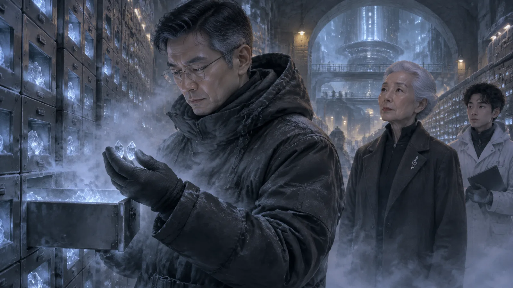
二十年。他在這裡存了幾千個人的記憶。
架子是按年份排的。他走到二〇七六年那一排，一格一格地看。每一格上有一個小小的標籤，客人的編號，沒有名字——這是規矩，保護隱私。
可是有一格不一樣。
那一格的標籤上不是編號。是三個字，用陸青自己的筆跡寫的，寫得很用力，筆畫都刻進標籤紙裡：
陸小滿。
他站在那一格前面，防寒衣裡的汗慢慢地變冷。
他不記得寫過這個標籤。他不記得把這片霜片放進來。可是那是他的字，他認得，那個「滿」字的最後一筆，他習慣往上勾。
他把抽屜拉開。
裡面有兩片霜片，不是一片。一片比較大，一片很小，小到幾乎看不見。他把它們拿出來，放在手套的掌心裡，在白霧中看著它們。
大的那一片，他知道是什麼。小滿，二〇七六年，她七歲。那一年夏天台北的氣候調節塔出了故障，整座城市熱到四十六度，電網崩潰，連續停電九天。醫院超載。小滿發燒，燒到四十一度，他打不到救護車，抱著她跑了三公里到醫院，醫院門口排了三百個人。
他記得這些。這些是外圍的，是事實。他不記得的是中間——她在他懷裡的重量，她最後說的話，他怎麼走回家的，之後的那幾個月他怎麼活的。
那一片是他。
小的那一片，他猜是那首夜曲。中間那一段。小滿說像有人在跟你說晚安的那一段。
他把兩片霜片放回抽屜，關上，站在那裡，聽著液態氮蒸發的聲音，像很遠的地方有人在嘆氣。
他想起溫如晦說的：你現在是一個沒有接回去的人。
他想起自己的手，停在半空中，那個轉折。
他想起小澈說的：你憑什麼。
✦
那天晚上他沒有回家。他坐在二樓的鋼琴前面，沒有彈，只是看著琴鍵。窗外的天很乾淨，一顆星星都沒有——氣候調節塔連天空都調過了，晴的，可是空的。
他在想一件事。
調音師的工作，是把記憶裡的痛調低。他做了二十年，做得很好，客人都很滿意。他們回來的時候會說：陸師傅，我現在想起那件事，不痛了。
他一直覺得那是好事。
可是溫如晦說，一首曲子的意思，不在正確的那些音裡。在你彈錯以後，怎麼接回去的地方。
他二十年來調掉的，是那些人彈錯的地方。他讓他們不痛了。可是他也讓他們沒有接回去的地方了。他們記得那件事，但那件事對他們沒有意義了，像一段被剪掉高頻的錄音，聽起來很平，很順，什麼都沒有。
他的客人裡，有多少人是這樣的？
有多少個像他一樣，手停在半空中？
第八章客人
保險庫那一夜之後的第三天，來了一個老客人。
姓黃，五十幾歲，在南港做電子零件，來過零度四次。第一次是二〇八〇年，她母親剛過世，她把母親最後三個月的記憶凍了——那三個月母親在安寧病房，她每天去，母親每天罵她，罵她為什麼不早一點帶她去看醫生，罵她為什麼嫁那麼遠，罵她為什麼是女兒不是兒子。她受不了了，她說。她請陸青把那三個月調一下，把罵的部分調低，留下其他的。
陸青調了。調得很好。植回去以後，黃女士記得那三個月，記得母親在病房裡，記得自己每天去，可是不記得那些話。她說她現在想起母親，只有溫暖。她每年清明都會來零度一次，跟陸青說謝謝。
這一次她來，是要冷凍另一段。她父親上個月也走了。
「一樣的。」她坐在調音台上，「最後那幾個月，他也一直罵。我想調掉。」
陸青把儀器準備好，戴上耳機，讀取。
她父親最後幾個月的記憶。病房，點滴，一個瘦成一把骨頭的老人，每天下午四點醒來，看見女兒坐在旁邊，第一句話永遠是：「妳怎麼又來了。」然後是一連串的話——妳公司不用上班嗎、妳老公不管妳嗎、妳來看我死掉有什麼好看。
陸青在耳機裡聽到的是很尖的高頻，一天一天，每天下午四點，一模一樣。
可是在高頻的後面，有一個東西。
很小。每天都有。在「妳怎麼又來了」之前的零點幾秒——老人睜開眼睛，看見女兒坐在那裡，那零點幾秒裡，有一段很短很短的中頻。溫暖的。像冬天的太陽照在木頭地板上。
陸青把耳機拿下來。
「黃女士，」他說，「妳父親每天醒來，看見妳的時候，有一個表情。妳有沒有注意過？」
黃女士想了一下。
「他皺眉頭。」她說，「每次都皺眉頭。」
「在皺眉頭之前。」
她又想了很久。
「……我不知道。他睜開眼睛，然後就開始罵。」
「我聽到了。」陸青說，「在他開始罵之前，有一個很短的東西。我不確定是什麼，可是那個頻率跟罵人的不一樣。它在每一天。妳如果把那幾個月調掉，這個也會一起掉。」
黃女士看著他。
「陸師傅，你以前不會跟我說這種話。」
「以前我聽不到。」陸青說，「或者，我聽到了，可是我覺得客人要的是不痛。」
「那你現在覺得客人要什麼？」
陸青想了一下。
「我不知道。」他說，「我只知道，如果是我，我會想聽聽看那零點幾秒是什麼。」
黃女士坐在調音台上，很久沒有說話。窗外的天很藍。
「植回去。」她終於說，「不調。我聽聽看。」
陸青把那幾個月植回去。過程很痛，她哭了。可是植到一半的時候，她忽然停下來，睜開眼睛，說：「他在笑。」
「什麼？」
「他睜開眼睛看到我的時候，在笑。」黃女士說，眼淚還在流，「很短。然後他就皺眉頭了。可是他在笑。他每天都在笑。」
她植完了。走的時候她在門口停下來，說：「我母親那三個月——那個調過的——可以還原嗎？」
「原始的霜片在保險庫裡。」陸青說，「我沒有丟。我從來不丟。」
「那我下個月來。」
她走了。陸青站在門口，看著她走進迪化街的人群裡。
他想，二十年。幾千個客人。他從來沒有問過他們：你要不要聽聽看痛的後面有什麼。
他想，也許是時候問了。
第九章錯音
第七個星期，溫如晦的記憶凍到了她五十歲。
「這一段，」陸青在耳機裡聽到的時候，停了一下，「二〇三一年，國家音樂廳。」
「我知道。」
那是溫如晦回台灣以後的第一場音樂會。她五十歲，正是一個鋼琴家最好的年紀，技巧還在，經驗也夠了。全台灣的樂迷都在等。門票三分鐘賣完。
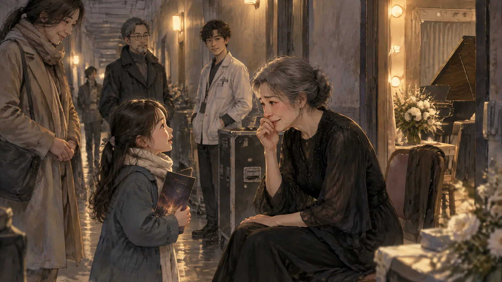
她彈的是貝多芬的最後一首奏鳴曲，作品一百一十一。
第一樂章很好。第二樂章的變奏，彈到第三段的時候，她忽然覺得——這是她後來的形容——「手指比腦子快」。她的手在彈，可是她的腦子還在前一個變奏裡。她彈了一個錯音。不是忘譜，是錯音，一個明確的、所有人都聽得到的錯音。然後她沒有停，繼續彈，可是那個錯音像一顆石頭掉進水裡，漣漪一圈一圈地擴散，接下來的三分鐘她彈得像一個學生。
音樂會結束以後，樂評很客氣，說「大師風範依舊」。可是她知道。整個台北都知道。
陸青在耳機裡聽到的，是很尖的高頻，可是跟維也納那一次不一樣——這一次的高頻後面，有一段很奇怪的東西。是中頻，溫暖的，像冬天的太陽。
「這一段後面，」他說，「是什麼？」
溫如晦躺在調音台上，睜開眼睛。
「音樂會結束以後，」她說，「我在後台哭了半個小時。然後有一個人敲門。是一個小女孩，八歲，她媽媽帶她來的，她想要簽名。我簽了。她說：『老師，妳彈錯的那個地方，我很喜歡。』」
陸青等著。
「我問她為什麼。她說：『因為那個地方聽起來像妳很想彈好。』」溫如晦閉上眼睛，「我後來教了二十年的書。我教過幾百個學生。我跟每一個學生都講這個故事。我說：你們不要怕彈錯，你們要怕的是聽起來不像很想彈好。」
「那個小女孩，」陸青說，「後來呢？」
「我不知道。我沒有問她的名字。」溫如晦說，「可是我每一次彈那首奏鳴曲，彈到那個地方，都會想起她。所以那個錯音，是我這一生彈過最重要的一個音。」
陸青把切點放在小女孩的話之後，按下冷凍。
「第一百二十片。」他說。
✦
那天結束的時候，溫如晦在門口停下來。
「陸先生，你想好了嗎？」
「還沒有。」
「你怕什麼？」
陸青想了一下。
「我怕植回去以後，我會變成一個沒有辦法工作的人。」他說，「這一行需要手很穩。如果我把那一段拿回來，我不知道我的手還穩不穩。」
溫如晦點點頭，像是這個答案她早就知道。
「我五十歲那年彈錯了以後，」她說，「有一整年沒有辦法上台。我以為我完了。後來我發現，我的手沒有變，變的是我聽自己的方式。我以前聽自己彈琴，是在聽有沒有錯。那一年以後，我在聽有沒有在說話。」
她推開門，外面的天還是很藍。
「你的手會穩的。」她說，「只是會用另一種方式穩。」
第十章霜盟
小澈是在第八個星期被抓到的。
不是被陸青抓到，是被保險庫的系統。零度的保險庫有一個很老的安全設計，每一次開啟都會記錄開門的人和時間。陸青很少看那個記錄，可是那個星期三的早上，他不知道為什麼看了。
星期二凌晨兩點十四分，小澈開了保險庫，待了四十分鐘。
陸青把記錄調出來，看著那一行字，看了很久。然後他走到樓下，小澈正在整理工具。
「星期二晚上，你在保險庫裡做什麼？」
小澈的手停了一下。
「整理。」
「四十分鐘。凌晨兩點。」
小澈沒有說話。他的耳朵紅了。
「你複製了幾片？」
沉默。
「小澈。」
「二十片。」小澈說，聲音很小，「最重要的二十片。華沙、柏林、維也納。他們說先看樣品。」
陸青閉上眼睛。
「霜盟給了你什麼？」
「一個職位。」小澈說，「高級調音師。信義區。年薪是這裡的四倍。」他抬起頭，眼睛紅紅的，「陸師傅，我在這裡三年，你教我的東西我都記得。可是我不能一輩子在一條巷子裡幫老人冷凍記憶。我想做大的。」
「你做的不是大的，」陸青說，「你做的是偷。」
「她不會知道！」小澈幾乎是喊出來的，「她一年以後就忘了！忘了以後這些記憶對她有什麼用？放在保險庫裡兩百年，沒有人聽？可是如果賣給霜盟，會有幾千個學生植進去，會有幾千個人知道她在華沙的感覺。那不是更好嗎？她的音樂會活下去！」
陸青看著他。這個年輕人是真的這樣相信的。
「小澈，你複製的那二十片，」陸青說，「植進去以前，霜盟會調。」
「當然，體驗版——」
「他們會把維也納的那四個小節調掉。會把二〇三一年的那個錯音調掉。會把每一個她想留的東西調掉。」陸青說，「然後幾千個學生植進去，他們會以為自己知道溫如晦。可是他們知道的是一個從來沒有彈錯的溫如晦。一個不存在的人。」
「那——」
「那不是讓她的音樂活下去。」陸青說，「那是殺了她，然後用她的名字賣一個假的。」
小澈站在那裡，嘴巴張著，說不出話來。
「東西還在你那裡？」
「……在。」
「拿來。」
小澈從背包裡拿出一個小小的保溫盒。陸青打開，二十片霜片在裡面發著光。他數了一遍，蓋上。
「你走吧。」他說。
「陸師傅——」
「你走吧。去霜盟。」陸青說，「你會是一個很好的調音師。你的耳朵很好。只是有一天你會發現，耳朵好的人，最後都會聽到自己調掉的那些東西。到時候你再回來。」
小澈站了很久。然後他把工具收好，放回架上，一件一件，跟三年來每一天一樣。然後他走了。
陸青抱著那個保溫盒，走進保險庫，把二十片霜片一片一片地銷毀。
他在白霧裡站了一會兒。然後他走到二〇七六年那一排，拉開那個抽屜。
第十一章復植
復植的過程比冷凍快，可是更痛。
陸青自己躺在調音台上。沒有人幫他，他把控制面板拉到手可以搆到的位置，自己操作。他先植小的那一片。
蕭邦。第二號夜曲。中段的轉折。
它回來的時候，像一扇門被打開。他忽然聽見了——那一段的旋律，右手從裝飾音落下來，落到主旋律上，然後左手接住，像有人在你要睡著的時候輕輕地說了一句話。他記得了。他記得那個聲音，記得它在琴房裡的樣子，記得小滿坐在琴凳上，腳搆不到踏板，彈到那裡的時候回頭看他，說：「爸，這裡像有人在說晚安。」
他的眼淚流下來，流進耳朵裡。
然後他植大的那一片。
✦
二〇七六年八月。
台北四十六度。停電第七天。小滿發燒，他抱著她在黑暗的樓梯間裡往下跑，十二層樓，電梯不能用。她很輕，輕到他覺得不對，七歲的小孩不該這麼輕。她的頭靠在他的肩膀上，很燙，她說：「爸，好熱。」他說我知道，我們去醫院，醫院有冷氣。她說：「爸，你唱歌。」
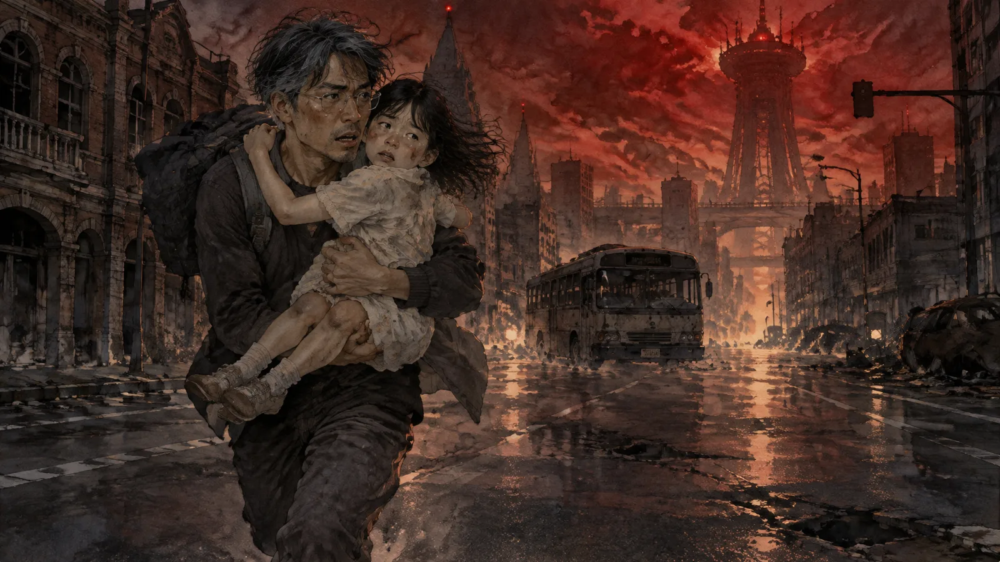
他唱了。他不會唱歌，他唱走音，唱那首夜曲的旋律，沒有詞，就是哼。他抱著她跑過沒有紅綠燈的路口，跑過停在路中間的公車，跑過一整條黑掉的信義路。他哼到中段那個轉折的時候，她說：「這裡。有人在說晚安。」
然後她沒有再說話。
醫院門口排著三百個人。他抱著她站在隊伍裡，站了四十分鐘。輪到他的時候，醫生看了一眼，沒有說話，只是把手放在他的肩膀上。
他走回家。十二層樓。他不記得怎麼走的。
之後的三個月他不記得。之後的三個月是一片白噪音——不是遺忘的白噪音，是太痛而什麼都聽不見的那種。他每天早上醒來，第一件事是想起她不在了，然後是一整天。他沒有工作。他在二樓的鋼琴前面坐著，彈那首夜曲，彈到那個轉折，然後停下來，因為他聽見她說「這裡」。
第四個月，他做了一個決定。
他自己冷凍了。冷凍了她死的那一段，冷凍了那三個月，冷凍了那段旋律。他寫了標籤，寫得很用力。然後他忘了。
✦
陸青在調音台上躺了很久。
他的臉是濕的，胸口是痛的，那種痛不是尖的高頻，是很低很低的、像地震一樣的東西，從身體的最深處傳上來。他躺著，讓它傳。
然後他發現一件事。
在那個很低的痛的後面，有另一個東西。很小，很輕，像是白噪音裡的一個音。他仔細聽。
是第四個月。
第四個月的某一天，他在鋼琴前面，彈那首夜曲，彈到轉折。他停下來，聽見她說「這裡」。然後——這是他冷凍之前沒有注意到的——他接了下去。
他接下去了。他彈完了那一段。他一邊哭一邊彈，彈得很難聽，可是他彈完了。
那是他接回去的地方。
他本來有這個地方的。他把它跟痛一起冷凍了，因為他分不出來哪一個是痛，哪一個是接回去。他以為都是痛。
陸青坐起來。他的手在抖。
他走到二樓，坐在鋼琴前面，開始彈。
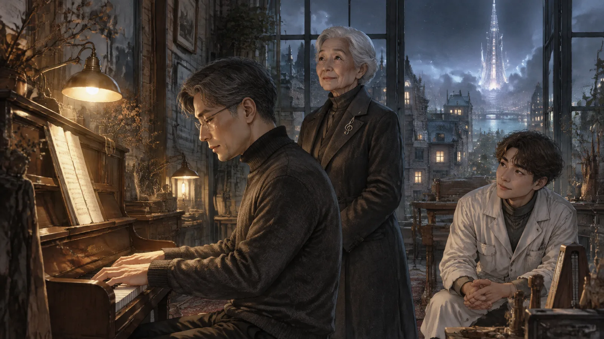
第二號夜曲。降E大調。他彈得很輕，很慢，彈到中段的轉折——右手從裝飾音落下來，落到主旋律上，左手接住。像有人在說晚安。
他的手沒有停。
他彈完了。
第十二章最後一場
溫如晦的記憶在第十個星期凍完。
一共兩百一十三片。從五歲的Do到八十四歲的最後一個音——最後一片是她上個月在家裡彈的一首巴哈，只有兩分鐘，彈給自己聽的。陸青問她要不要留這一片，她說要，「這是我知道我還會彈的最後一次」。
「都在這裡了。」陸青把保險庫的鑰匙卡給她，「妳隨時可以來聽。」
溫如晦接過卡片，看了一眼，放進大衣的口袋。
「陸先生，」她說，「你彈完了。」
不是問句。陸青點點頭。
「什麼時候？」
「上星期。」
「痛嗎？」
「痛。」陸青說，「可是接回去了。」
溫如晦笑了。這是陸青第一次看到她笑，八十四歲的臉上，那個笑容像一個小女孩，像五歲的、坐在榻榻米上按下第一個Do的那個女孩。
「那我要請你幫一個忙。」她說。
✦
音樂會在三月。中山堂，八百個座位。
不對外售票。溫如晦說她不要樂評，不要媒體，不要「大師告別」四個字。她請了她教過的學生，學生的學生，幾個老朋友，還有陸青。她說：「這是我還記得的時候的最後一場。我要彈給知道我的人聽。」
她八十四歲，走上台的時候背還是很直。她坐下來，手放在琴鍵上，沒有立刻彈。她轉過頭，對著觀眾席說：
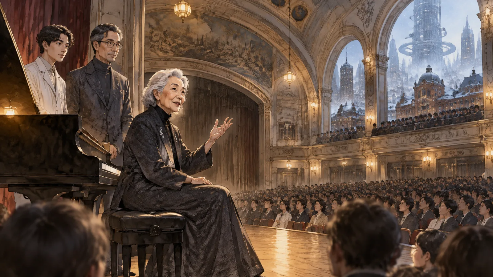
「今天我會彈錯。」
台下有人笑了。
「我不是在客氣。」溫如晦說，「我八十四歲了，我的手指不聽話，我的記憶也在走了。今天我會彈錯很多地方。我請你們仔細聽那些地方。」
然後她彈了。
貝多芬，作品一百一十一。第一樂章的時候她的手很穩，穩得像五十歲。第二樂章的變奏，彈到第三段——陸青在台下握緊了拳頭——她彈錯了。同一個地方。二〇三一年的那個錯音，五十八年以後，她又彈錯了一次。
可是這一次，她沒有停，也沒有慌。她接下去，接得很慢，很溫柔，像在跟那個錯音說話，說：我知道，我知道你在這裡，我們一起往下走。接下來的三分鐘，她彈得像一個八十四歲的人，手指有一點慢，有一點抖，可是每一個音都是在說話。
陸青坐在第三排，聽著。他聽見了那個錯音後面的東西——不是高頻，不是刺耳的，是一種很深的、像海底一樣的溫暖。他知道那個溫暖是什麼。那是一個八歲的小女孩，在後台，說：「妳彈錯的那個地方，我很喜歡。」
音樂會結束的時候，沒有人鼓掌。八百個人坐在那裡，安靜得像沒有人在呼吸。
然後溫如晦站起來，對著台下說：「陸先生，請上來。」
陸青愣住了。
「我答應過你，」溫如晦說，「這是我請你幫的忙。」
他走上台。溫如晦站到旁邊，讓出琴凳。
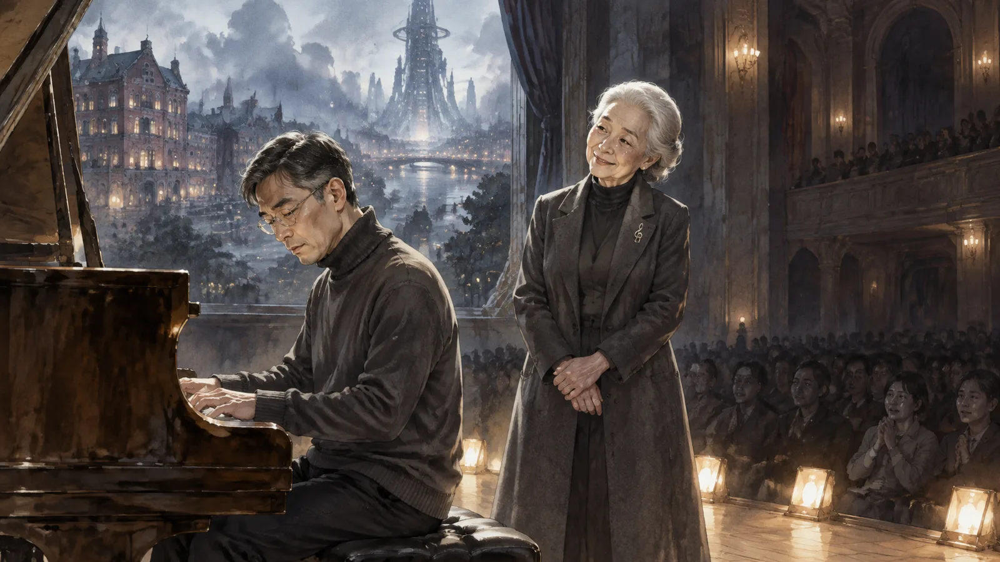
「蕭邦。」她說，「第二號夜曲。你彈給我聽。」
陸青坐下來。八百個人在看他。他的手在抖。他想起小滿，想起她說「這裡像有人在說晚安」。他想起第四個月的那一天，一邊哭一邊彈完的那一段。他想起溫如晦說的：你的手會穩的，只是會用另一種方式穩。
他彈了。
彈到中段的轉折，他的手沒有停。右手落下來，左手接住。像有人在說晚安。
他彈得不好。他不是鋼琴家，他是調音師，他的手是用來聽別人的記憶的。可是他彈完了。
台下，八百個人裡有幾個人在哭。陸青不知道為什麼。可能他們每一個人，心裡都有一段沒有接回去的地方。
第十三章融
四月，溫如晦來零度，說要把霜片植回去。
「全部？」
「全部。」她說，「我還有六個月，醫生說。六個月以後我會開始忘。我要在忘記之前，把它們全部拿回來，全部再活一次。然後忘記的時候，是帶著全部忘記的，不是帶著一半。」
「植回去的過程，會很痛。兩百一十三片，每一片都不調——」
「我知道。」
陸青看著她。
「溫女士，我可以問一個問題嗎？妳一開始為什麼要冷凍？如果最後還是要拿回來？」
溫如晦想了一下。
「因為我怕。」她說，「我怕我忘記以後，它們就沒有了。我想留一份在外面，安全的，凍著的。」她看著保險庫的方向，「可是後來我發現，凍著的東西不是我的。它們在那裡，兩百年，可是它們不在我這裡。我聽過幾次——用你的機器，聽那些霜片——它們很完整，很美，可是像在聽別人的錄音。我要它們回到我的身體裡，讓它們跟我一起壞掉。這樣才是我的。」
陸青點點頭。
「還有，」溫如晦說，「你的學徒，那個複製的事情。我知道了。」
陸青愣了一下。
「霜盟的人來找過我。」她說，「他們說有一批樣品，很完整，問我願不願意授權，他們會付很多錢。我說不。他們說那批樣品已經在他們手上了。我說那你們試試看，看有沒有人敢用一個活著的人的記憶做生意，而那個人會在下一場音樂會上公開講這件事。」
「他們怎麼說？」
「他們說會處理。」溫如晦笑了一下，「那批樣品，我想已經不在了。」
陸青沒有說他銷毀了那二十片。他想溫如晦大概也知道。
「植回去的時候，」他說，「我幫妳。」
「不用。」溫如晦說，「我自己來。你教我怎麼操作，我一片一片自己來。這是我的東西。」
✦
她花了三個月。
每天下午三點來，植三片，然後在二樓的鋼琴前面坐一會兒，有時候彈，有時候不彈。陸青在旁邊。他們不太講話。有時候她植完一片會哭，有時候會笑，有時候什麼表情都沒有，只是坐著。
七月，她植完最後一片。那首兩分鐘的巴哈。
她坐在鋼琴前面，彈了那首巴哈。彈得很慢，很多錯音。彈到一半，她停下來，看著鍵盤。
「陸先生，這架琴的高音La，」她說，「是不是有一點悶？」
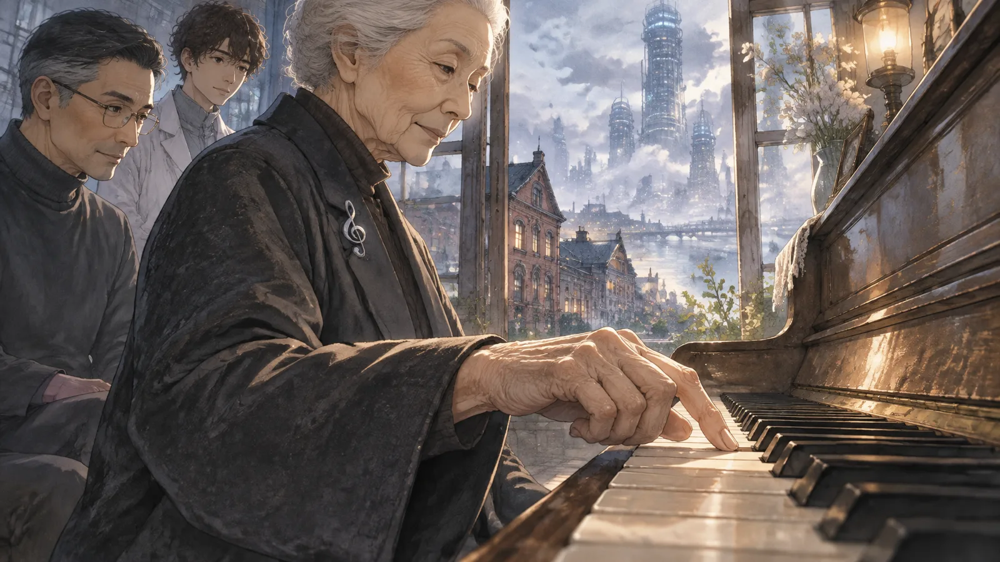
陸青走過去，按了一下。二手的山葉，六十年的琴，那個鍵確實有一點悶，不是壞，只是比別的鍵鈍一點。
「要修嗎？」
「不要。」溫如晦說。她把手放回琴鍵上，繼續彈。彈到那個La的時候，她按得很輕，輕到幾乎沒有聲音，然後她微笑了，像是聽見了什麼別人聽不見的東西。
彈完以後，她把手放在膝蓋上，看著窗外均勻的藍天。
「陸先生，」她說，「謝謝。」
「謝什麼？」
「謝謝你沒有調。」她說，「一個音都沒有。」
尾聲
二〇九〇年的春天，台北下了那一年的第一場雨。
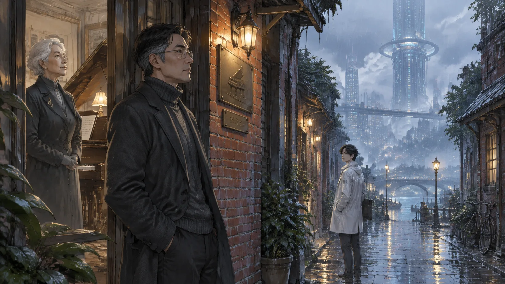
市政府安排的，十二天裡的第一天。陸青站在店門口，看著雨落在迪化街的石板路上。氣候調節塔調出來的雨很均勻，一滴一滴的大小都一樣，可是落在地上的聲音還是雨的聲音。
門口的黃銅牌子換了。還是那兩個字，零度，可是下面多了一行小字，是陸青自己刻的：
「本店不調音。」
生意變差了。很多客人聽到不調音就走了。可是也有一些人留下來，他們通常在門口站很久，看著那行字，然後推門進來，說：「我有一段東西，我想拿回來。」
陸青幫他們拿回來。不調。他們植回去的時候會痛，他在旁邊，看著他們痛，看著他們在痛的後面找到那個接回去的地方。大部分人找得到。找不到的，他會陪他們再聽一次。
小澈在十一月回來過一次。他在霜盟做了半年，辭職了。他站在門口，沒有進來，只是說：「陸師傅，我聽到了。」陸青問他聽到什麼，他說：「我調掉的那些東西。」然後他走了。陸青想他會再回來的，可能要幾年。
溫如晦在十月走了。
不是忘記，是走了。九月的時候她還記得所有的曲子，十月的一個早上，她在家裡的鋼琴前面坐著，沒有再起來。她的學生說，琴譜攤開在貝多芬的作品一百一十一，第二樂章，第三個變奏。
陸青去了告別式。沒有樂評，沒有媒體。八百個人。
他回來以後，在二樓的鋼琴前面坐下，彈了那首夜曲。彈到中段的轉折，右手落下來，左手接住。
像有人在說晚安。
窗外，均勻的雨一滴一滴地落下來。他想，如果小滿在，她會說這雨太整齊了，不像真的。他想，溫如晦會說，太整齊的雨不是雨。
他繼續彈。他彈得不好。可是每一個音都在說話。
（完）
留言板
看不懂、想補充、發現錯誤都歡迎留言；填個暱稱就能發。